数字逻辑：环境搭建与工程实践
实验目标
- 了解本课程的实验平台：EDA 工具与 FPGA 开发板。
- 掌握 Vivado的基本安装与配置注意事项。
- 熟悉 EGO1 开发板的硬件组件及基本结构。
- 掌握 Vivado 项目的完整开发流程（新建工程、添加文件、功能仿真、综合实现、生成比特流与上板验证）。
- 了解 FPGA 的基本原理及其与传统 CPU 的区别。
1. 实验平台简介 (Experimental Platform)
本课程采用 EDA 工具 + FPGA 开发板 的组合进行硬件实验。
1.1 EDA 工具：Vivado 2018.3
- 功能：Vivado 是 Xilinx 专为旗下 FPGA 产品设计的开发环境。它允许开发者综合（编译）硬件设计、执行时序分析、查看 RTL 电路图、仿真电路对不同激励的反应，并使用编程器配置目标芯片。
- 版本：本课程统一使用 Vivado 2018.3 版本。
1.2 FPGA 开发板：EGO1
-
核心芯片：搭载 Xilinx Artix-7 FPGA 芯片（型号：
xc7a35tcsg324-1）。 -
主要板载外设：
-
电源开关 (Power Switch)
- 电位器 (Potentiometer)
- 5个独立按键 (Button)
- 16个拨码开关 (Dial switch)
- 复位按键 (Reset Button)
- 8个七段数码管 (Seven-Segment Digital Tube)
- 16个LED指示灯 (LEDs)
- 其他接口：VGA、Audio、USB-UART/JTAG（用于连接电脑烧录程序）、USB-PS/2
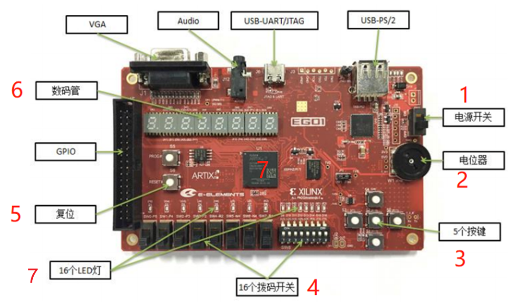
2. Vivado 安装
2.1 注意事项
Vivado 的安装体积较大且对环境路径有严格要求，请务必注意以下几点：
- 磁盘空间：建议目标磁盘预留 20GB 以上的空闲空间。
- 路径命名规范：系统用户名称、安装包所在的文件夹名称，以及 Vivado 的最终安装路径中，绝对不能包含中文字符和空格。
- 下载链接：见站点顶部“课程资源”
- 安装包与许可证：下载安装程序压缩包:
Xilinx_Vivado_SDK_2018.3_1207_2324.tar.gz,License文件压缩包Vivado2018.3_licence.zip，并分别解压缩。 - 版本选择：安装界面建议选择 Vivado HL Design Edition。
- 定制安装（节省空间）：为了节省硬盘空间，在组件选择界面强烈建议只勾选课程需要的选项：
- 展开
7 Series设备选项，仅勾选 Artix-7（取消勾选其他芯片如 Kintex-7、Spartan-7 等）。 - 导入 License：安装完成后，打开 Vivado License Manager，点击
Load License->Copy License...，选择并导入你下载好的.lic文件。
2.2 安装方法
- 解压缩安装包，双击运行安装程序
xsetup.exe：
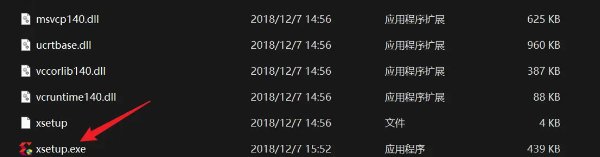
- 忽略软件更新，点击
Continue：
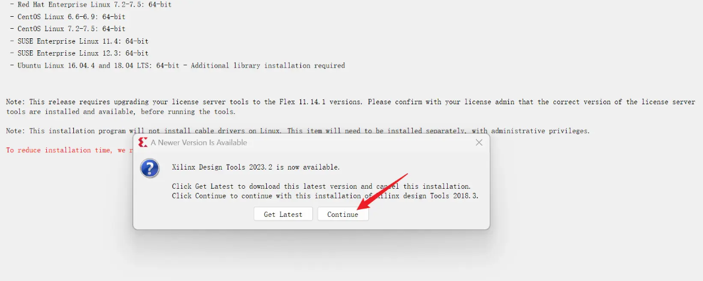
- 到此界面，勾选
I Agree
- 选择第二个
Vivado HL Design Edition：
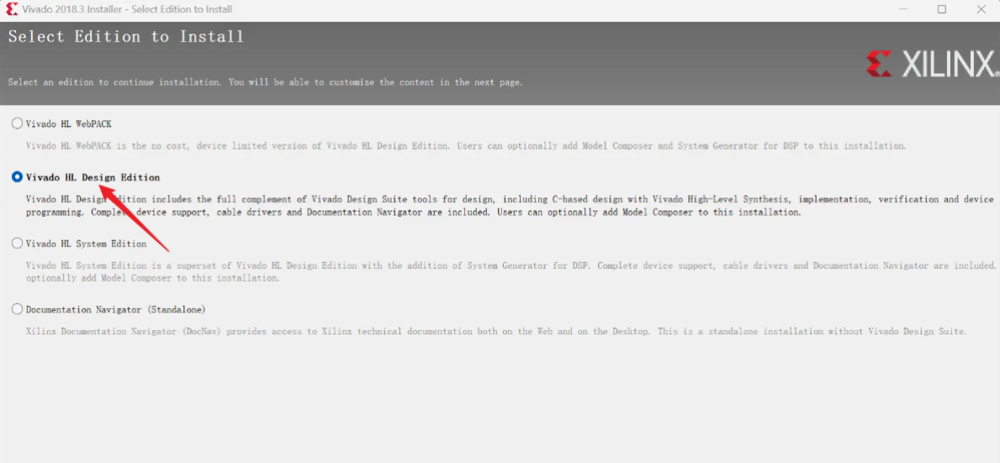
- 为了节省硬盘空间，在组件选择界面强烈建议只勾选课程需要的选项，即 Artix-7：
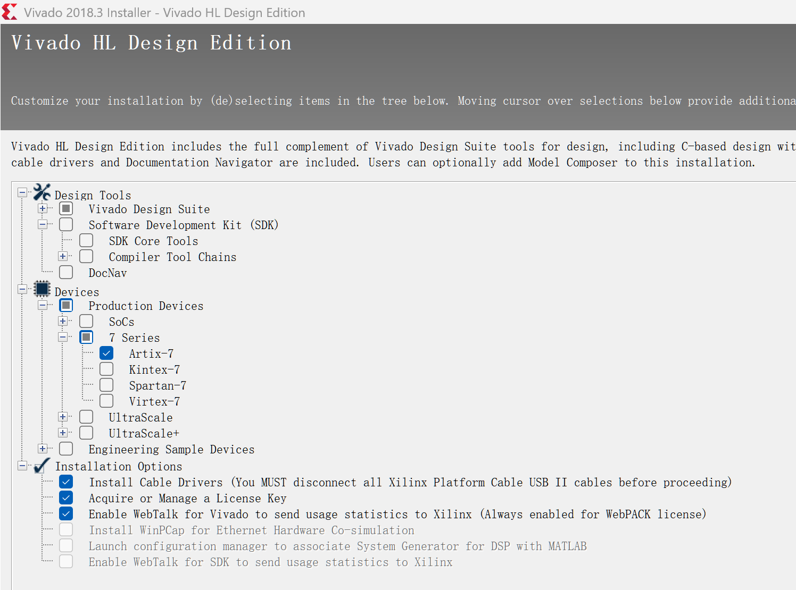
- 可修改安装位置，注意不要出现中文，修改好后点击
Next：
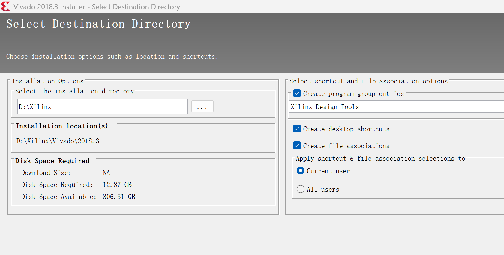
- 安装完成后打开许可证管理软件，点击
Load License -> Copy License
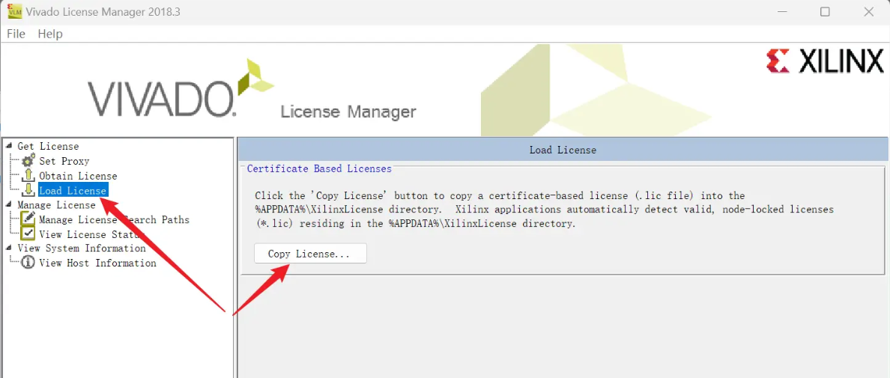
- 找到许可证文件，点击
打开：
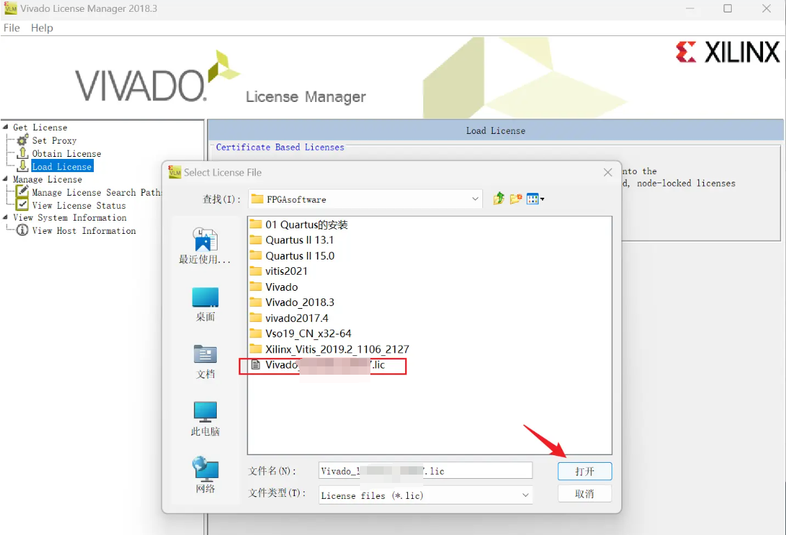
- 点击
View License Status可查看软件许可状态：
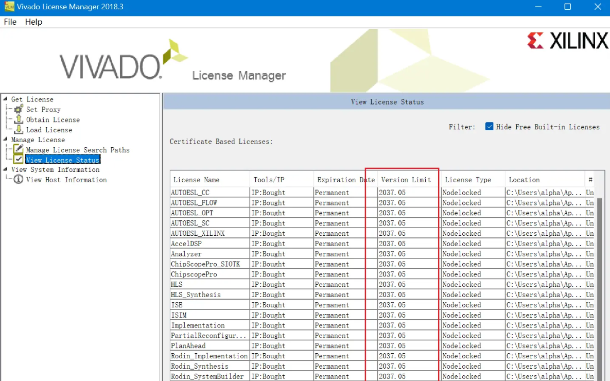
- 双击桌面快捷方式，打开 Vivado：
3. Vivado 项目标准开发流程
使用 Vivado 与 FPGA 开发板进行硬件验证的完整流程分为以下 6 个步骤：
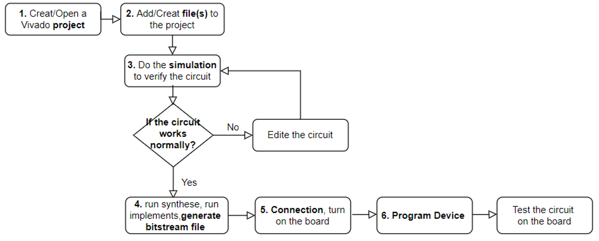
步骤1：创建或打开 Vivado 项目
- 启动Vivado，在起始界面单击
Create Project，或左上角File->Create Project创建新项目。
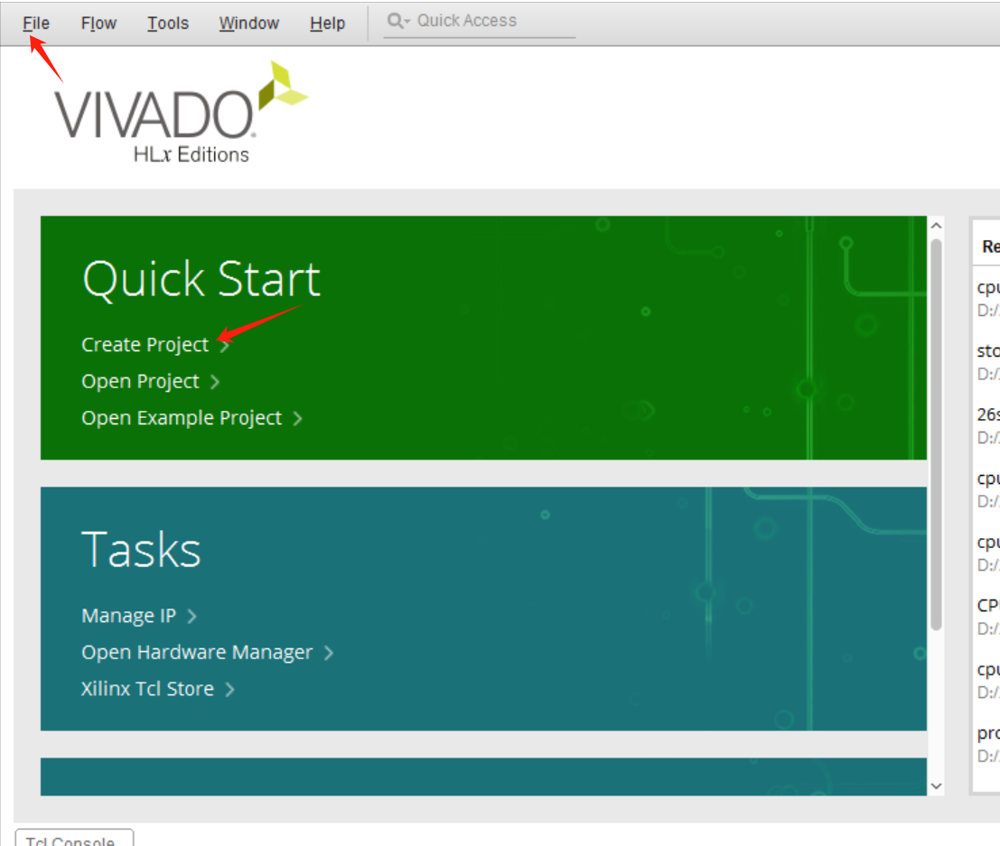
- 设置项目名称和路径，项目名称和文件路径中不能出现中文和空格。
Create project subdirectory: 默认勾选，会在文件路径下，创建一个工程名称一样的子文件夹。
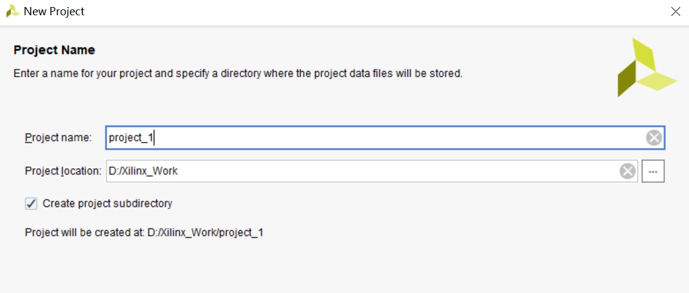
- 项目类型选择 RTL Project。
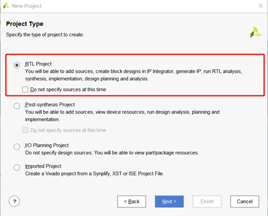
- 接下来是创建源文件和约束文件，此步骤先直接单击
Next跳过，后续单独创建
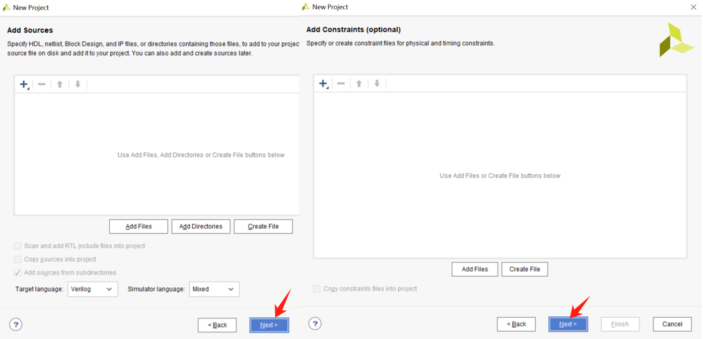
- 选择 Default Part 时，搜索并选中 EGO1 开发板对应的芯片型号：
xc7a35tcsg324-1。
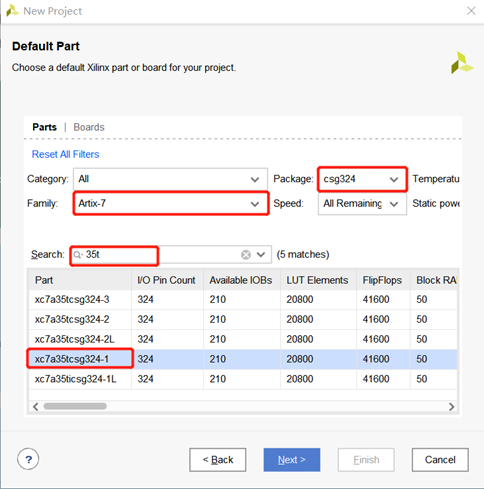
步骤2：添加或创建源文件
- 需要为项目添加三种类型的文件：设计文件（Design sources）、仿真文件（Simulation sources）和约束文件（Constraints）。
- 可以在新建项目时添加（暂不使用该方法），也可以在项目建立后，通过点击界面的
Add Sources(或点击+号) 进行添加。
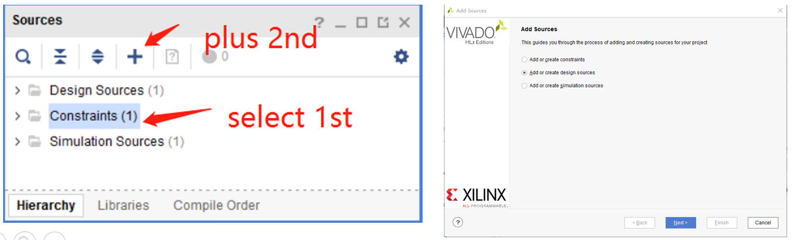
- 创建电路设计文件 (Design Source) ，文件名为lab1_design.v，输入File name
lab1_design
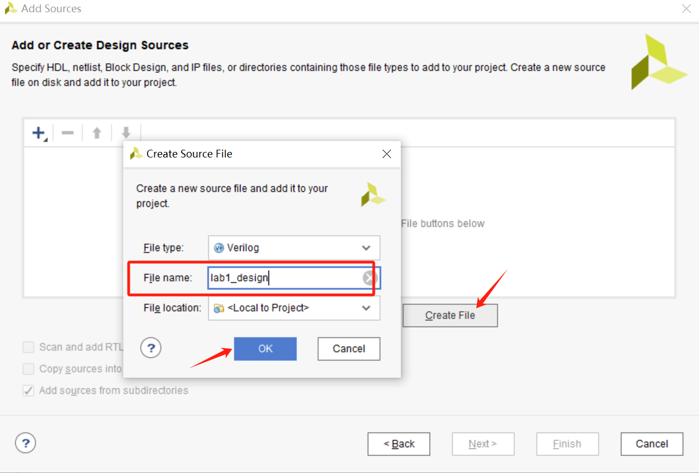
- 接下来保持默认选项，单击
Finish->OK,
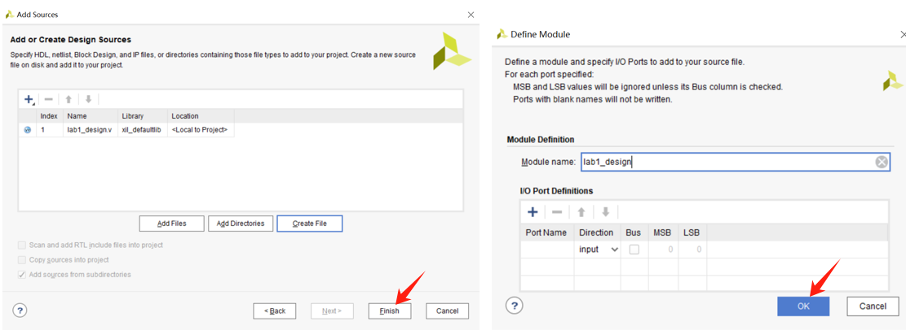
- 设计文件创建成功，工程界面与双击代码文件打开后内容如图所示
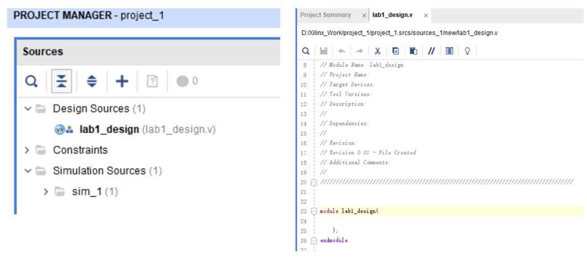
- 补充完整代码文件并保存
module lab1_design(
input [7:0] sw,
output [7:0] led
);
assign led = sw;
endmodule
- 以同样方式创建仿照文件 (Simulation Source) lab1_sim.v，补充完整仿照代码并保存
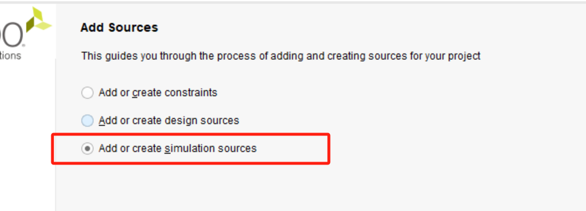
`timescale 1ns / 1ps
module lab1_sim( );
reg [7:0] tb_sw = 8'h0000;
wire [7:0] tb_led;
lab1_design dut(
.sw(tb_sw),
.led(tb_led)
);
always #10 tb_sw=tb_sw + 1'b1;
endmodule
- 创建约束文件 (Constrain Source): lab1.xdc
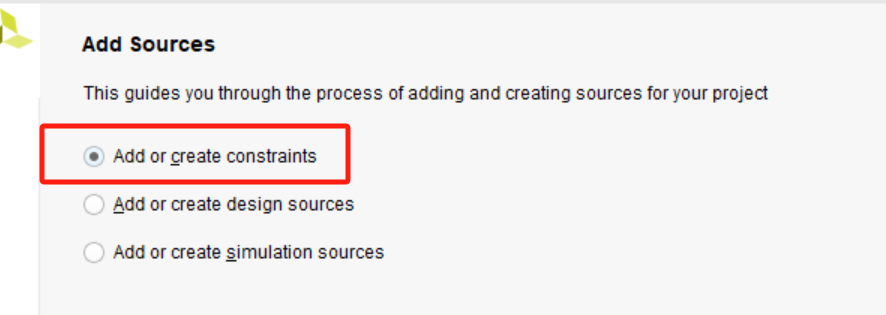
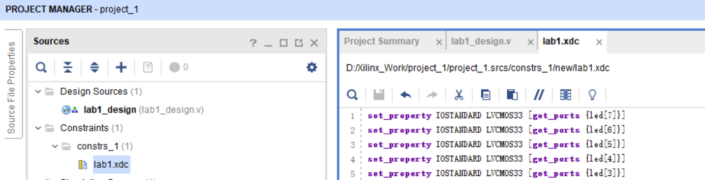
- 引脚约束内容设置如下
set_property IOSTANDARD LVCMOS33 [get_ports {led[7]}]
set_property IOSTANDARD LVCMOS33 [get_ports {led[6]}]
set_property IOSTANDARD LVCMOS33 [get_ports {led[5]}]
set_property IOSTANDARD LVCMOS33 [get_ports {led[4]}]
set_property IOSTANDARD LVCMOS33 [get_ports {led[3]}]
set_property IOSTANDARD LVCMOS33 [get_ports {led[2]}]
set_property IOSTANDARD LVCMOS33 [get_ports {led[1]}]
set_property IOSTANDARD LVCMOS33 [get_ports {led[0]}]
set_property PACKAGE_PIN F6 [get_ports {led[7]}]
set_property PACKAGE_PIN G4 [get_ports {led[6]}]
set_property PACKAGE_PIN G3 [get_ports {led[5]}]
set_property PACKAGE_PIN J4 [get_ports {led[4]}]
set_property PACKAGE_PIN H4 [get_ports {led[3]}]
set_property PACKAGE_PIN J3 [get_ports {led[2]}]
set_property PACKAGE_PIN J2 [get_ports {led[1]}]
set_property PACKAGE_PIN K2 [get_ports {led[0]}]
set_property IOSTANDARD LVCMOS33 [get_ports {sw[7]}]
set_property IOSTANDARD LVCMOS33 [get_ports {sw[6]}]
set_property IOSTANDARD LVCMOS33 [get_ports {sw[5]}]
set_property IOSTANDARD LVCMOS33 [get_ports {sw[4]}]
set_property IOSTANDARD LVCMOS33 [get_ports {sw[3]}]
set_property IOSTANDARD LVCMOS33 [get_ports {sw[2]}]
set_property IOSTANDARD LVCMOS33 [get_ports {sw[1]}]
set_property IOSTANDARD LVCMOS33 [get_ports {sw[0]}]
set_property PACKAGE_PIN P5 [get_ports {sw[7]}]
set_property PACKAGE_PIN P4 [get_ports {sw[6]}]
set_property PACKAGE_PIN P3 [get_ports {sw[5]}]
set_property PACKAGE_PIN P2 [get_ports {sw[4]}]
set_property PACKAGE_PIN R2 [get_ports {sw[3]}]
set_property PACKAGE_PIN M4 [get_ports {sw[2]}]
set_property PACKAGE_PIN N4 [get_ports {sw[1]}]
set_property PACKAGE_PIN R1 [get_ports {sw[0]}]
- 引脚约束分为IOSTANDARD设置和PIN设置，每个端口IOSTANDARD统一设置为LVCMOS33，对应引脚(PIN)可在Ego1_UserManual_v2.2.pdf文件，或开发板对应外设旁查看。
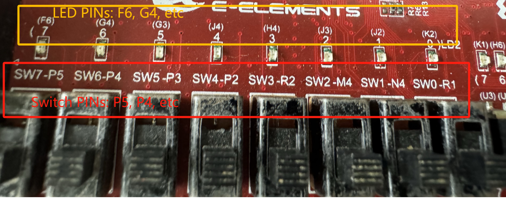
步骤3：进行功能仿真 (Simulation)
- 在左侧 Flow Navigator 中，点击 Run Simulation。
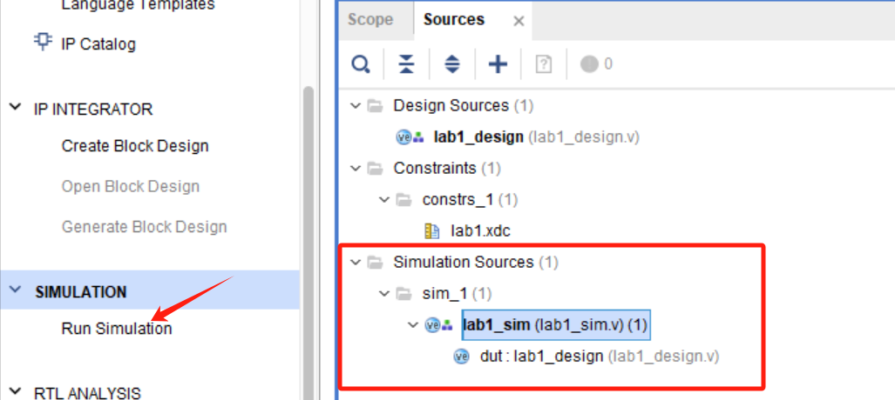
- 运行后将生成波形图（Waveform），记录电路输入输出信号的状态。
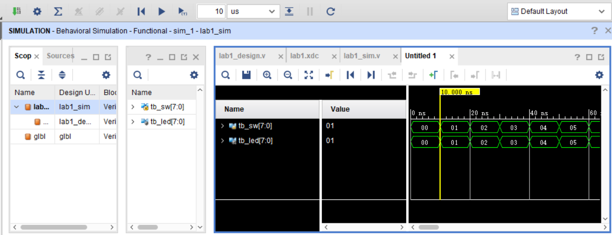
- 注意：必须仔细观察波形验证电路功能。如果逻辑错误，需修改设计文件并重新仿真；只有在功能仿真通过后，才能进行后续的下板步骤。 可自行使用以下按钮并了解对应功能。
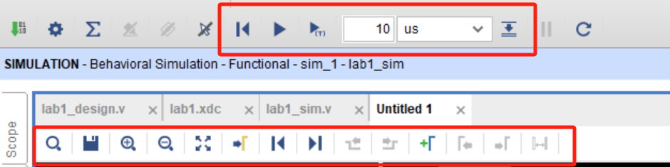
步骤4：综合、实现与生成比特流
在功能确认无误后，依次执行以下操作将代码转化为硬件网表：
- 点击 Run Synthesis（运行综合）。
- 点击 Run Implementation（运行实现）。
- 点击 Generate Bitstream，生成最终用于烧录的比特流文件（后缀为
.bit）。
注意：如果在上述过程中出现任何 Error 或 Critical Warning，必须检查并修正项目设置、设计代码或约束文件，然后再重新生成比特流。
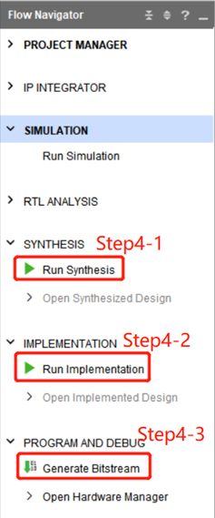
步骤5：连接开发板
- 使用数据线将电脑与 EGO1 开发板的 USB-UART/JTAG 接口相连。
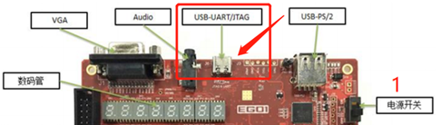
- 打开 EGO1 开发板的电源开关。
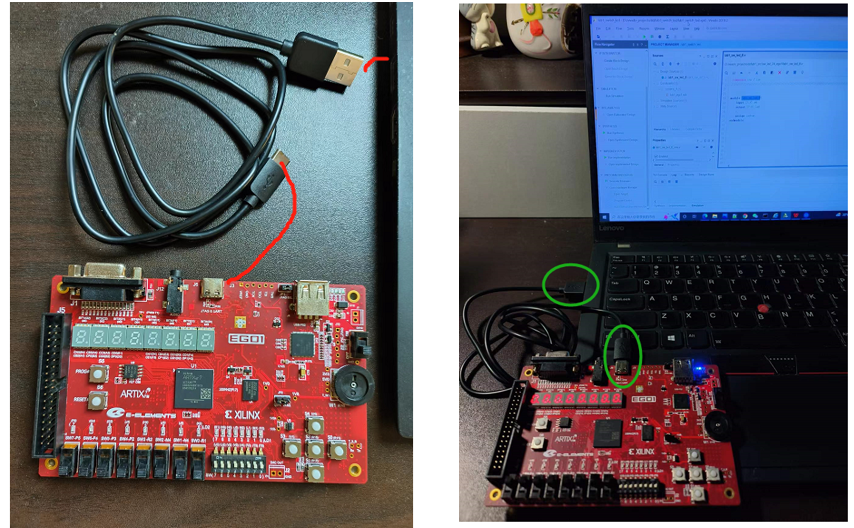
- 在 Vivado 中点击 Open Hardware Manager，然后点击 Open Target ->
Auto Connect。 - 若连接成功，Hardware 窗口的列表中将出现目标芯片
xc7a35t_0。
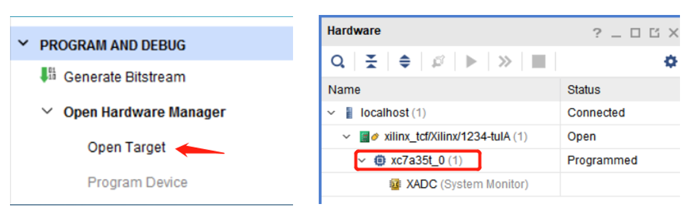
步骤6：烧录芯片与上板验证
- 在 Hardware Manager 中点击 Program Device，选择刚刚生成的
.bit文件，点击 Program。
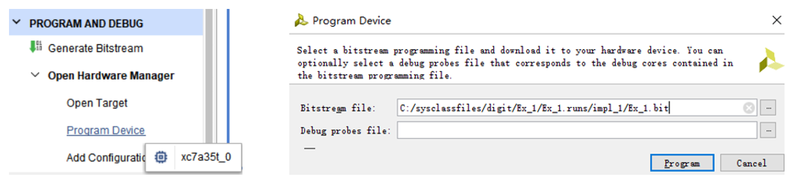
- 烧录完成后，EGO1 板上的 "Done" 指示灯会亮起，表示电路已成功实现在 FPGA 芯片上！
- 拨动板卡上的输入开关，观察输出的变化，验证硬件行为是否与设计相符。
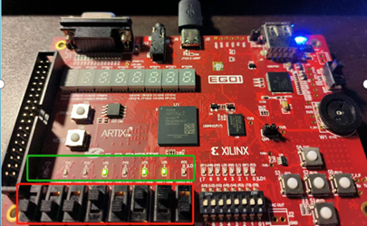
4. 硬件断开与芯片重新配置
4.1 安全断开连接
实验结束后，强烈建议按照以下顺序断开开发板，严禁带电热插拔：
- 断开软件连接：在 Vivado 底部的 Tcl Console 窗口中输入指令
disconnect_hw_server并回车，断开 Vivado 与 FPGA 芯片的连接。 - 断开硬件连接：先关闭 EGO1 开发板的电源，然后再拔下 USB 数据线。
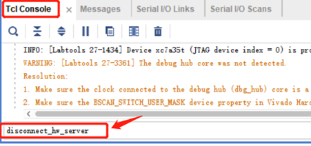
4.2 修改工程的 FPGA 芯片型号
如果在建工程时选错了芯片，可以通过以下步骤更改：
-
在左侧 Flow Navigator 的 PROJECT MANAGER 下点击 Settings。
-
选择 General，在
Project device选项右侧点击...按钮打开设备选择器。
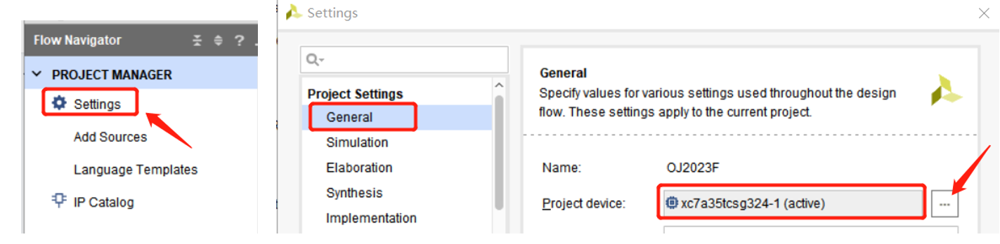
-
重新搜索并选中
xc7a35tcsg324-1，点击 OK。 -
在 Settings 窗口底部点击 Apply 完成配置。
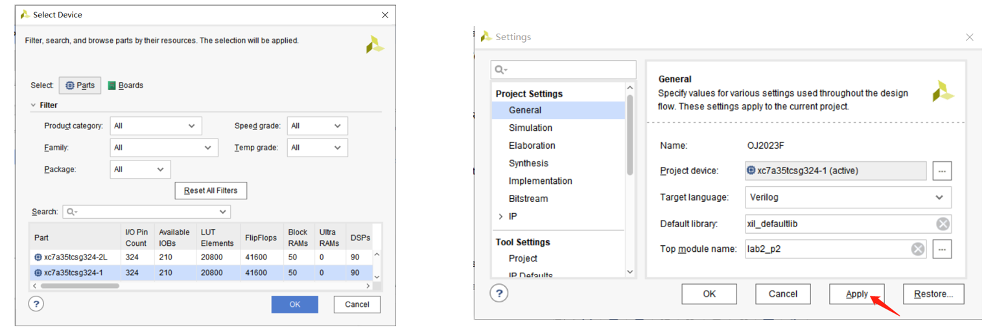
- 关闭Vivado工程，找到工程所在目录，删除完整xxx.runs目录（此操作用于删除含有旧芯片型号信息的临时文件，以确保修改生效）。再次重启vivado即可。
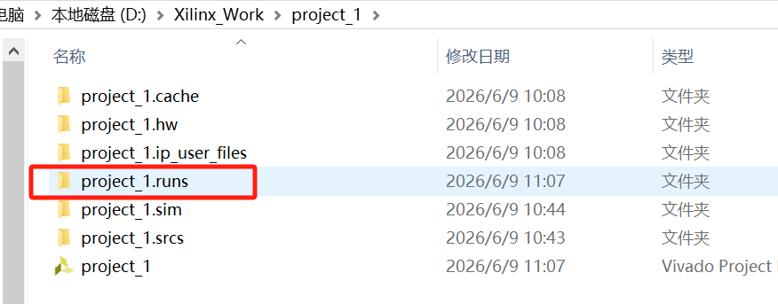
5. 实验练习
-
根据本教程提供的开发流程，复现在 EGO1 开发板上实现并验证一个简单的开关控制 LED 的电路。
-
输入：8位拨码开关 (
sw[7:0]) - 输出：8位 LED 灯 (
led[7:0]) - 功能描述：开关的开合状态直接驱动对应的 LED 灯亮灭。
-
签到要求：复现仿真波形与上板验证效果
-
为方便后续开发，可在个人电脑下载并安装vivado2018.3 （optional）
Vivado仅支持windows和linux系统。linux版本安装包需自行到AMD官网下载，
mac系统运行vivado需安装虚拟机